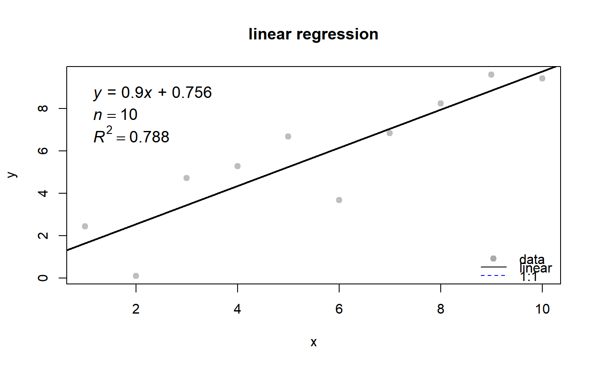

plot a linear regression figure and return a list of parameters.
plotlm(x, y, xlim = range(as.numeric(x), na.rm = TRUE), ylim = range(as.numeric(y), na.rm = TRUE), plot.title = "linear regression", xlab = "x", ylab = "y", refline = FALSE, slope = 1, intercept = 0, showr2 = TRUE, showleg = TRUE)
| x | numeric |
|---|---|
| y | numeric |
| xlim | numeric |
| ylim | numeric |
| plot.title | character |
| xlab | character |
| ylab | character |
| refline | logical. if a reference line is plotted |
| slope | slope of refline |
| intercept | intercept of refline |
| showr2 | logical |
| showleg | logical |
a figure
#> [[1]] #> Estimate Std. Error t value Pr(>|t|) #> (Intercept) 0.7560803 1.0243362 0.7381173 0.4815317545 #> x 0.9003415 0.1650867 5.4537485 0.0006060053 #> #> [[2]] #> [1] 0.7880423 #>